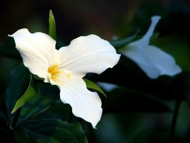

Door County
Wisconsin 's Door County Peninsula is ecologically diverse — upland and boreal forest, bogs, swamps,sand and rock beaches, limestone escarpments, and farmlands.
The variety of ecosystems supports a large number of wildflower species
Explore the beauty
of Door County Wildflowers ....
With five star parks, tons of county parks, and private nature santuaries, Door County is teeming with natural areas for you to stalk your favorite wildflowers.